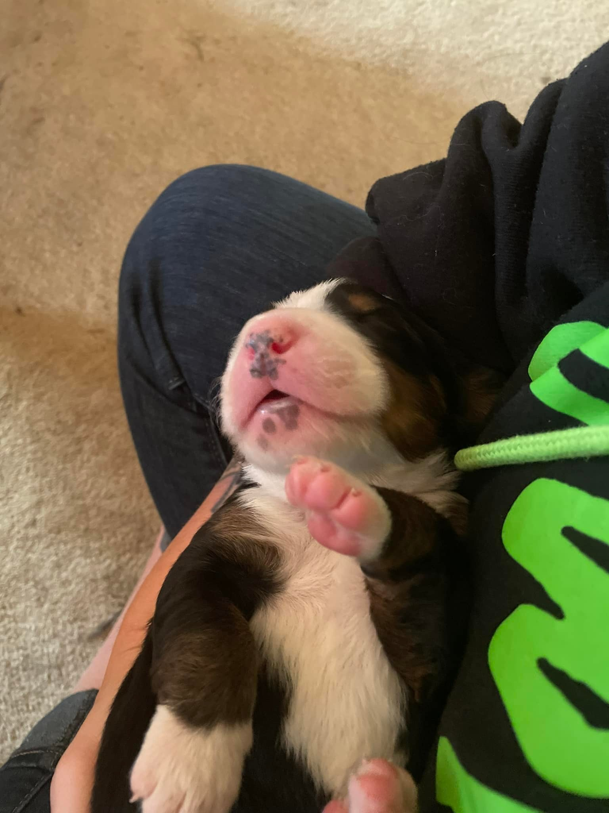

Discription about Kilo
Kilo 3 days old

My dogs name is Kilo and she was born on May 15,2023. She is a perbread Bernese Mountain dog. Kilo is going to be 3 years old and is still very much like a puppy. Before I got Kilo I had to do alot of research about her breed as there are many things that can go wrong with a Berner (I will get to those later with links on those issues).
Kilo 10 days old
Kilo was the runt of her litter, and the only one who's face was all white. Her nose was so small and pink and her pads were pink except for one toe pad it was black. Kilo was so small that she fit in the palm of my hand,and she would cry unless she was being held.
Kilo 8 weeks old

Kilo's breed is a very loving, playful, loyal to their person. So far Kilo has had one heck of a life, from near death experinces, to hunting, quadding, and even on her brakeout runs.
Things that can go wrong with a Berner
- Joint problems
- Hip Dysplasia
- Elbow Dysplasia
- Stomach issues
- Bloat
- Thyroid Disorders
- Bowel Disorders
- Flipped Stomach
- Cancer
- Mast cell tumors
- Eye disorders
- Cataracts
- Progressive retinal atrophy